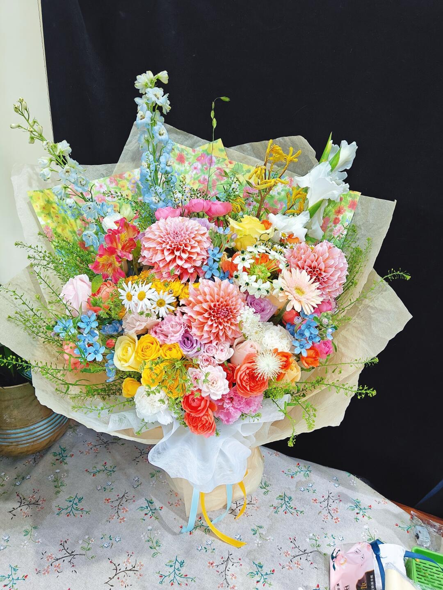
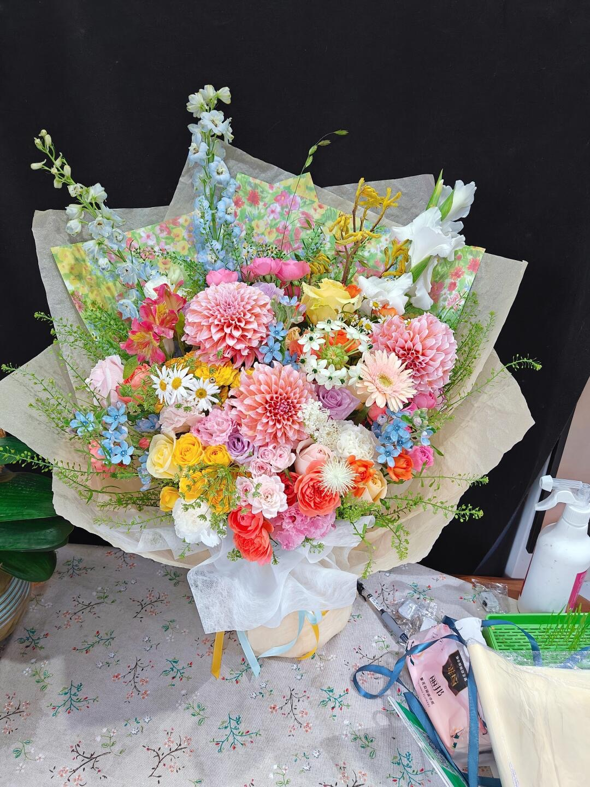
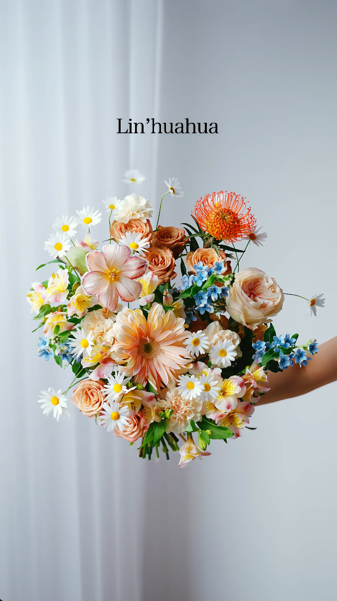
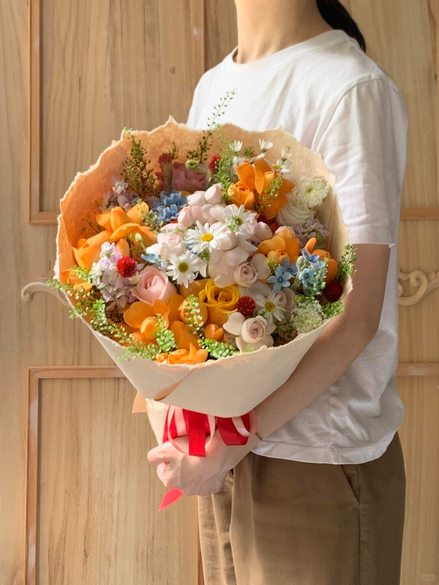
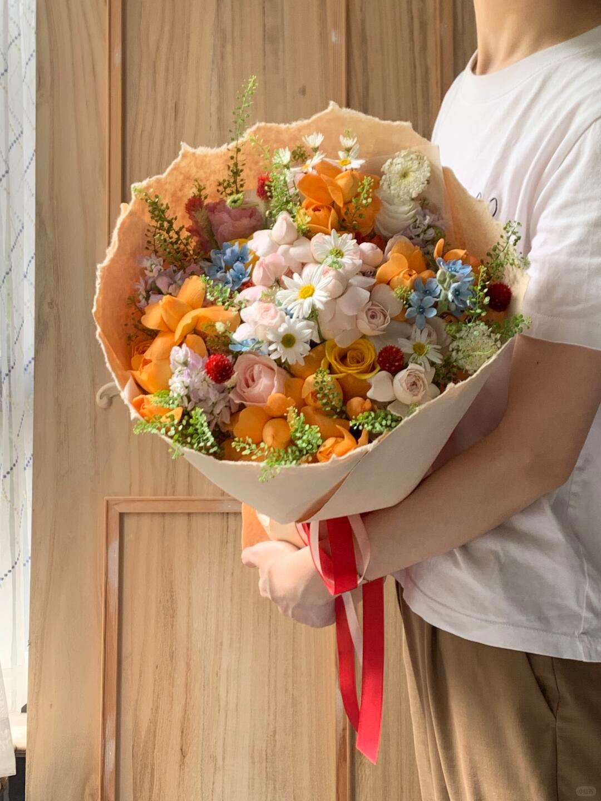
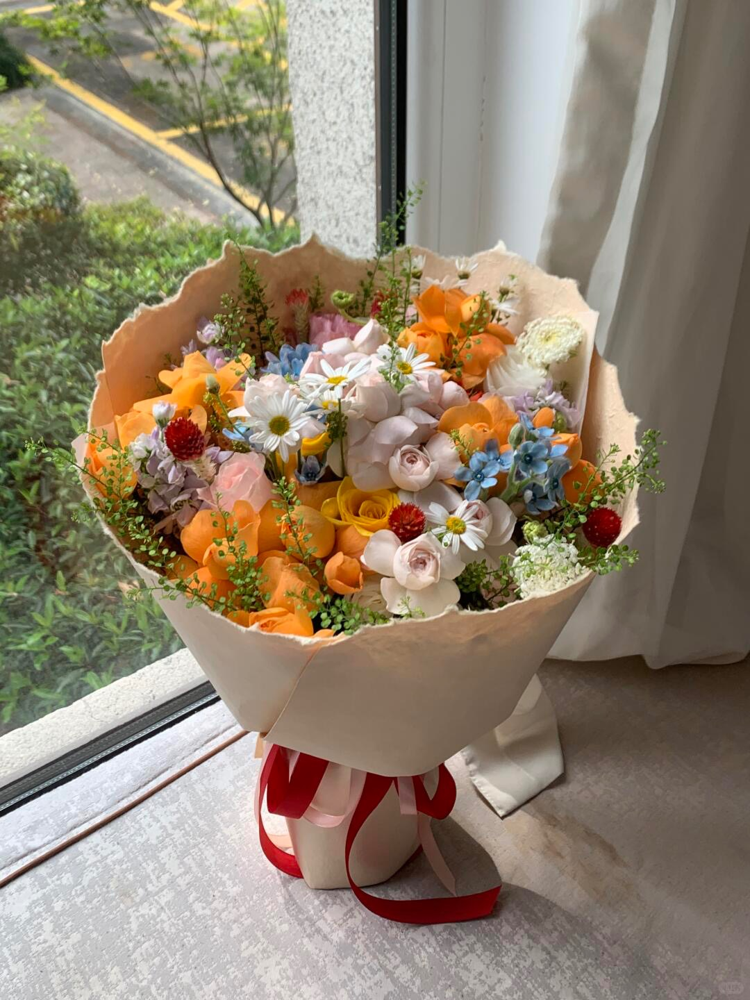
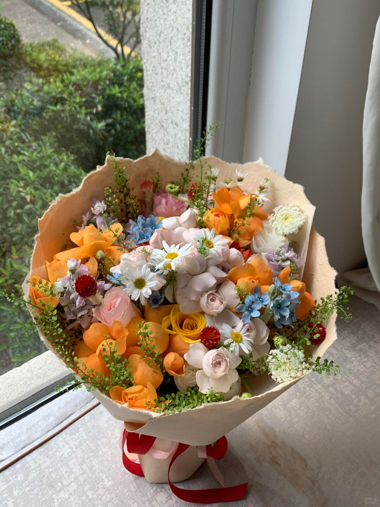

这页直接读本地图片，不再只看链接。每张卡都保留“你要的感觉 / 要避免什么 / 参数怎么动”，方便我们边看图边对话。
这些图是“想要继续长成这样”的方向。每张卡都已经按图整理过，不只是标题。


真实的大体量花束，但镜头里要显得有层次，不是一坨。
别让画面塌成一团，也别只剩局部好看。


像森林里冒出来的果子和小花，有童话感。
别做成太规整的礼盒花，也别太成熟端庄。

温柔、奶感、带一点甜味的配色。
别太荧光，别太硬。




像秋天的果汁，偏暖、偏甜、偏多汁。
别冷、别灰、别太素。


花束本身就像“浪漫”的实体化表达。
别太功能型，别像随手扎的。
这些是“别长成这样”的提醒。它们对生成器很有用，因为能直接变成约束。

太赤裸、太原生态、像没整理完。
单个大主花压住全局。
这组负责补“整体强、局部强、颜色单调、反面”四种判断。


按你现成的分组先挂上：有整体、有局部细节，颜色单调但形状好，和反面教材。后面我们可以继续逐张细分。


整体很成立，而且每个局部都能看出花材节奏，不是只有一个大轮廓。
别把这种层次感做丢，尤其是侧面和外圈的小枝条。


整体统一，但不是一团紫，里面有轻飘飘的细节和空气感。
别把这种气氛压重，紫色一重就容易闷。


有季节性，整体气质清楚，细节里也有柔和的材料变化。
别把季节感做成单调的标签，要保留花材的层次。


像一瓶真的风景，整体开阔，局部又有细节能停下来看。
别只做成一片空，风景感要靠前后层次支撑。


竖向线条很强，花材层次清楚，局部细节也很能打。
别把纵向拉太死，还是要留一点松动。


颜色跳得多，但整体还是有统一感，局部细节很丰富。
别让多色变成乱堆，要保住节奏。


整体形状不错，层次也在，只是颜色变化不够丰富。
别把这种形状做坏了，但也别继续只用一条色带。